Je suis deÌveloppeur web fullstack

ApreÌ€s 10 ans au service de la communication d’ONG environnementales, j’ai deÌcideÌ de faire de ma passion pour le code mon nouveau meÌtier. Ayant suivi le bootcamp du Wagon à Paris, je suis deÌsormais aÌ€ la recherche d’opportuniteÌs en matieÌ€re de deÌveloppement web back et front, avec une attention particulieÌ€re pour le secteur de la tech for good.
réalisations
compétences
formation
Maison des droits des enfants et des jeunes
Lieu d’écoute et d’information, d’accès au droit pour les mineurs et jeunes majeurs, de médiation familiale et de formation.
Site Wordpress
Découvrir
Doog
Projet fictif de plateforme proposant des défis numériques techniques à relever pour aider des projets sociaux et solidaires.
Application Ruby on Rails
Découvrir
DeÌveloppement web
- Backend : Ruby on Rails, SQL, Heroku
- Frontend : Javascript ES2015, React JS, HTML, CSS, Bootstrap
Chef de projet web
- ReÌdaction cahier des charges et appel aÌ€ projets
- Suivi de la conception de sites Wordpress & Drupal
- Administration, visibiliteÌ et reÌfeÌrencement
Télécharger
mon CV complet
A l'été 2019, j'ai suivi le programme du Wagon Paris, batch #290 : un bootcamp de 9 semaines intensives pour apprendre à coder et maîtriser HTML, CSS, Bootstrap, JavaScript ES2015, SQL, git, GitHub, Heroku et Ruby on Rails. A cette occasion et au sein d'une équipe projet, j'ai imaginé, développé et livré pour production un clone d'AirBnB et une application Rails originale.